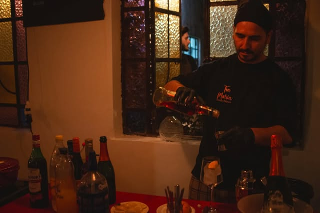

Clásicos Italianos
Propuesta anunciada por Tía María para el 2 de octubre de 2026. El detalle del menú, horario y disponibilidad se consultan en su enlace oficial.
Ver menú publicadoHome Bistró · Pergamino
Conocé la propuesta de Tía María y elegí la próxima fecha para compartir.

Nos encontramos en Pergamino
Elegí la fecha y compartí cuántos son. Tía María confirma la disponibilidad y los detalles de la experiencia.
El canal de reserva está publicado en el enlace oficial del restaurante.